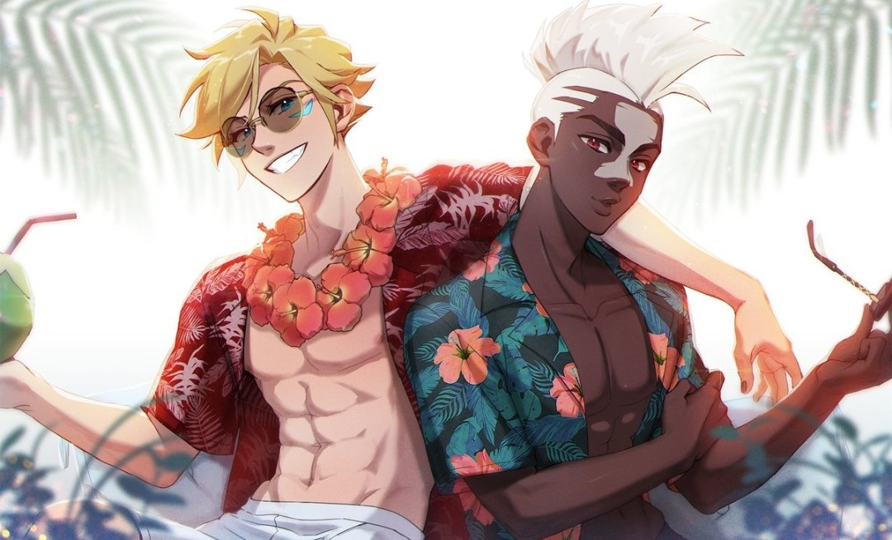
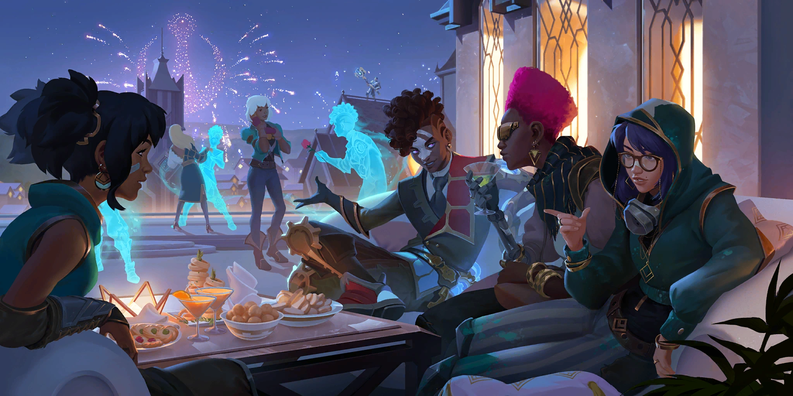
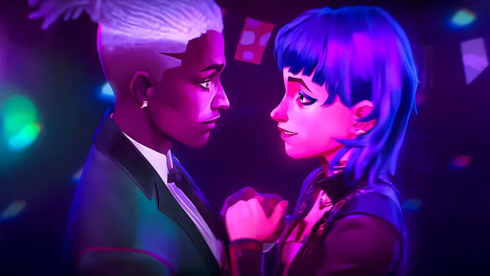

Fofocas da Subferia de Zaun
"Nem sempre o que brilha é um relógio de prata, às vezes é uma armadilha pronta para explodir."
Descubra os segredos mais obscuros e explosivos da Subferia de Zaun.

Após a atuação invejável de Jinx e Ekko na segunda temporada de Arcane, muito se fala sobre a relação dos dois. A Atriz e o Ator estavam extremamente sincronizados e empenhados em seus papéis na série.

O clima e a química entre os dois é notável, bem similar a Zaun, intensa e imparável, porém após o encerramento da produção da segunda temporada de Arcane, nenhum dos dois deu alguma declaração confirmando ou negando a relação mais profunda de ambos.

A Atriz de Jinx e Powder, não confirma ou nega nada sobre sua relação com o Ator de Ekko, quando perguntada sobre nesta manhã em uma entrevista, ela afirma "Eu adoro ele e adorei atuar com ele também, porém tem certas coisas que são bem pessoais para falar em rede zaunita. Tipo sairia em todos os canais 'NOVOS MILES MORALES E GWEN STACY DA SUBFERIA' eu explodiria tudo facilmente."

Infelizmente não foi possível fazer uma entrevista com o Ator de Ekko, porém quando perguntado sobre para seus amigos fogolumes que estavam numa pista de skate próximo do sumidouro, a qual Ekko frequenta com bastante recorrência, eles afirmaram: "É muito louco ver nosso mano depois de tantos relacionamentos, ter a certeza e estar tão decidido sobre o atual relacionamento, estamos muito felizes pelo Ekko." Com essa afirmação, será que nosso Puro Garoto Salvador é tão puro e inocente quanto aparenta ser? Vejamos...
Com a curiosidade de nossos jornalistas, iniciamos uma leve investigação para entendermos o que a de grave por trás dessa história do nosso "Puro Garoto Salvador".
Ficamos chocados com a quantidade de relacionamentos e rolos que Ekko teve antes da sua química com a Jinx, para alguns isso pode ser uma questão boba de "Passado é passado, o que sobrou é aprendizado", porém para outros isso pode se tornar uma questão bem presente e complexa.
Confira abaixo todos os relacionamentos/rolos que Ekko teve até o momento:
 Ekko e Taliyah já se engraçaram em "The Climb" por meados de 2018
Ekko e Taliyah já se engraçaram em "The Climb" por meados de 2018
The Climb | Season 2018 Cinematic - League of Legends (vulgo "Epoca que eramos felizes e não sabiamos")
Ekko e Qiyanna aparentemente já tiveram uma relação mais calorosa na banda "True Damage"(2019), porem cantora nega relacionamento serio.


Show da True Damage em Ionia (foto por: @Prod.DRX)
informantes dizeram que Ekko teve medo de sofrer Bifobia na época, então pagou para paparazzis manterem segredo. o caso gera discussão até os dias atuais
A Cantora Seraphine afirma que sempre teve uma quedinha por Ekko desde de meados de 2019 em sua estreia em "Giants" de True Damage, porem, por talvez Ekko acabar de sair de uma situação difícil sobre sua festa na praia com Ezreal, escolheu por ficar um tempo sozinho longe de relacionamentos.
A Cantora afirma em entrevista: "Ekko disse que me considera muito, mas por causa de problemas pessoais, por eu ser sua SUPER MELHOR AMIGA DO CORAÇÃO e não querer estragar a nossa amizade, ele decidiu não ir para frente sobre nossa relação. Mas a esperança é a última que morre, não é mesmo? :3"

clique na imagem para altera
Por mais que não reciproco, era mais do que notavel a adimiração e amor de Seraphine por Ekko
De forma breve ainda na subferia de Zaun, Ekko e Zeri são flagrados em suposto encontro. porem depois desse caso nada mais veio a publico sobre a relação dos dois.

Ocorrendo de um jeito totalmente chocante surge um Casal que ninguem esparava, durante a produção de Star Guardians de 2022, Ekko e Sona são vistos andando juntos com muita frequencia, logo depois foi confirmado que ambos estavam em um namoro.

porem Infelizmente no final de 2023 Ekko fala em entrevista que houve o termino da relação dos dois sem dar muitos detalhes, Sona não fala nada sobre o termino dos dois em nenhum momento até agora.
No começo do ano de 2024, Ekko teve uma atitude que muitos julgam equivocada, ele aparece com um visual totalmente novo e dirigindo uma moto muito acima do limite de velocidade permitido e entrando de penetra em uma mega Festa de Piltover, logo após um termino de um relacionamento.

Ainda na mesma Festa, Ekko decidi dar em cima de todas as garotas presentes ao mesmo tempo, uma delas sendo inclusive a Atriz Klara Böhringer, que interpreta a Killjoy na serie Valorant(é possivel vela ao lado da garota de cabelo rosa). seus amigos fogolumes afirmam sobre o ocorrido:"O Maluco não perde tempo né?".
Finalmente chegando nos dias atuais, voltamos para a Relação de Ekko e Jinx.
Bem é notavel que nosso Garoto Salvador tem um passsado que pode se julgar como conturbado, onde Ekko teve que engolir muita porra calado.
porem se mostra, segundo informantes, que Ekko esta determinado e decidido em ter uma relação a serio com Jinx
cabe ela agora julgar o que é melhor para si mesma.
SERÁ QUE ESSA BOMBA RELOGIO EXPLODE? FIQUE LIGADO EM RUNETERRA NEWS!